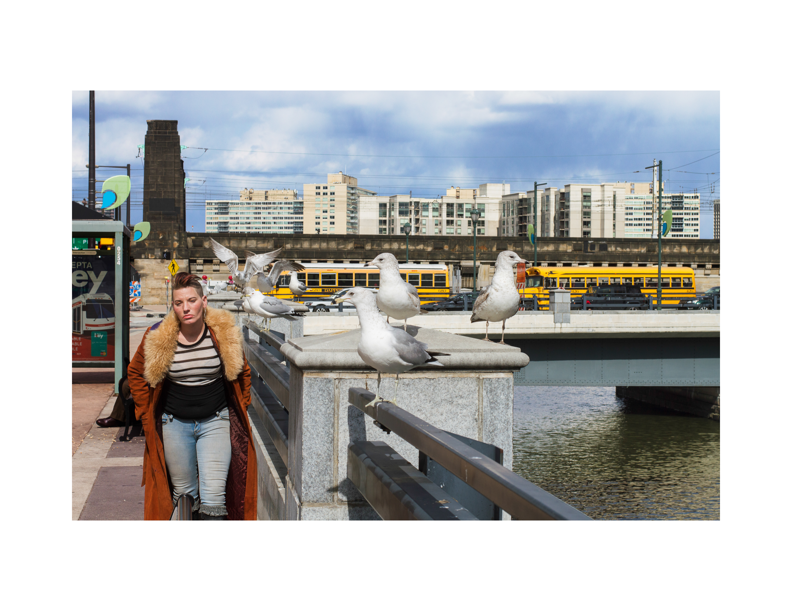
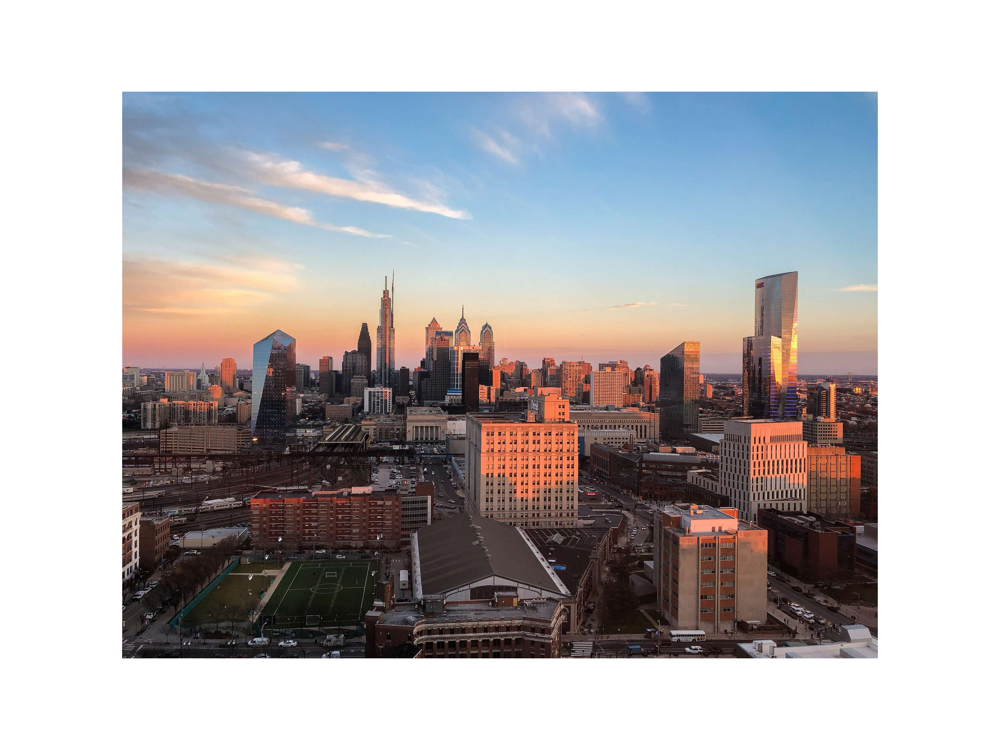
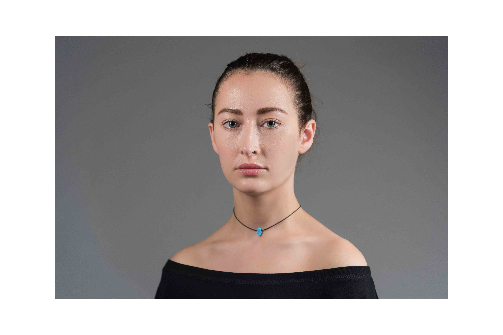
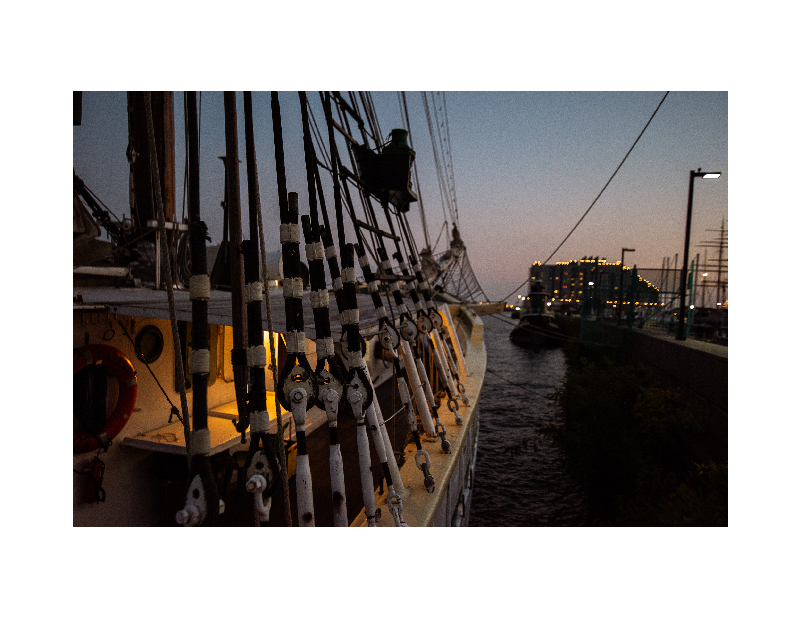
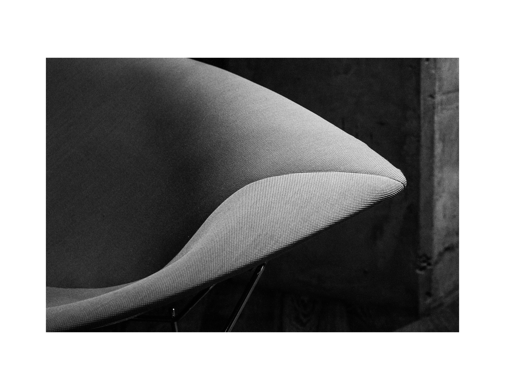

Photography

Decisive moments
The decisive moment is a concept by the street photographer Henri Cartier-Bresson. The decisive moment refers to capturing an event that is ephemeral and spontaneous, where the image represents the essence of the event itself.

Shot on iPhone
A collection of shot on iPhone photos.

Studio Lighting
Examining artifical lighting techniques and provides context for exploration of the studio as a creative photographic environment.
Artificial Colors
Experimenting with artificial colors from the Apple HomeKit - Phillips Hue.
Surreal Eyes
Surrealism in photography.

Lights

Organic Shapes
Visual Design: Using Shape in Photography

Golden Hour
Natual lighting during sunset and sunrise.